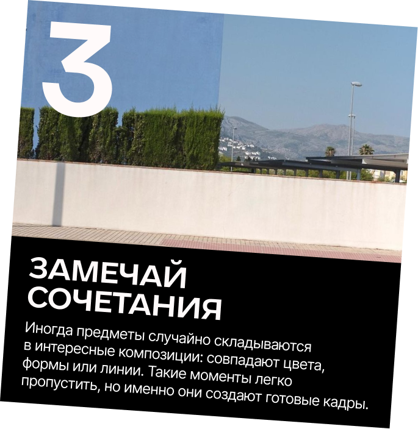

Небольшой гайд о том, как замечать детали вокруг и находить вдохновение в самых обычных моментах дня.
НАХОДИ МЕЛОЧИ В ПОВСЕДНЕВНОСТИ



Небольшой гайд о том, как замечать детали вокруг и находить вдохновение в самых обычных моментах дня.
